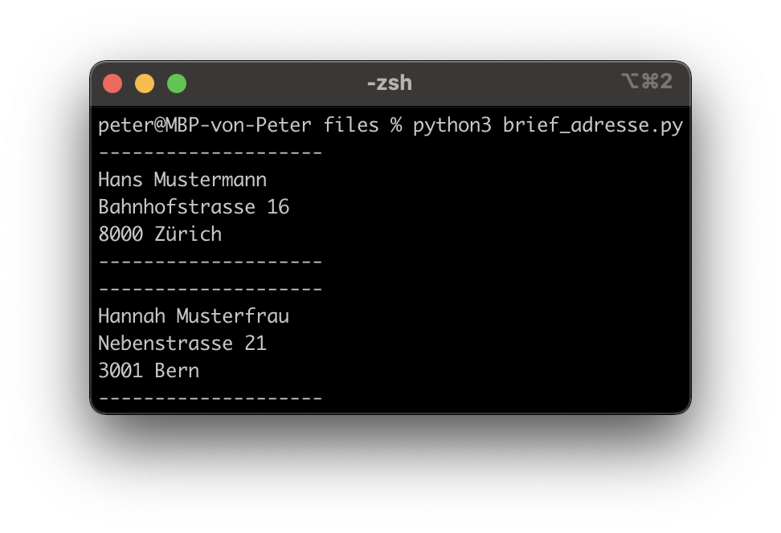
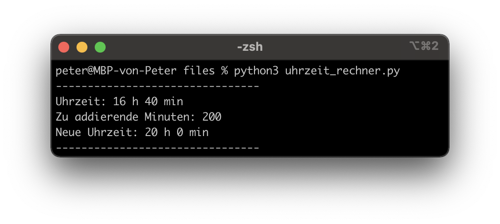

Lernziele
Sie verstehen das Prinzip von Funktionen und können dieses Wissen in einem Programm umsetzen
Was sind Funktionen?
Funktionen kennen sie bereits aus der Mathematik,
z. B. f(x) = 2x.
In Python werden Funktionen mit “def”/“return” definiert und meistens verwendet, um Code besser zu strukturieren:
# definition einer Funktion
def meine_funktion(x):
return 2*x
# Funktionen können mehrmals aufgerufen werden
print(meine_funktion(2))
print(meine_funktion(4))
# Output: 4 8(Im Gegensatz zu einer Variable sollte ein langer Funktionsname mit einem Bodenstrich getrennt werden z. B. “bmi_berechnen()” und nicht “bmiBerechnen()”)
Parameter bzw. Argumente
Funktionen können (müssen aber keine) Argumente haben:
def funktion_ohne_argument():
print("hello")
def funktion_mit_argument(x):
print(x)
# Funktionen haben immer Klammern (mit oder ohne Argumente)
funktion_ohne_argument()
funktion_mit_argument("world")
# Output: hello worldDie Argumente sind nur innerhalb der Funktion erreichbar:
Rückgabewert
Funktionen können (müssen aber keinen) Rückgabewert haben. Ein Rückgabewert ist nichts anderes als eine Variable, welche ausserhalb der Funktion gespeichert werden kann:
Reine vs. Modifizierte Funktionen
In der Programmierung wird zwischen reinen (“pure”) und modifizierten (“impure”) Funktionen unterschieden. Reine Funktionen geben für den gleichen Input immer den gleichen Output z. B. mathematische Funktionen. Benutzen sie, wenn möglich, reine Funktionen!
globaleVariable = 0 # das ist eine globale Variable
def reine_funktion(x):
return 2*x
def modifizierte_funktion(x):
global globaleVariable # auf globale Variable zugreifen
globaleVariable = globaleVariable + 1
return 2*x*globaleVariable
reine_funktion(4) # Output: 8
reine_funktion(4) # Output: 8
modifizierte_funktion(4) # Output: 8
modifizierte_funktion(4) # Output: 16 --> anderer OutputAuftrag: Brief Adressieren
- Erstellen sie eine Funktion, welche eine korrekt formatierte Adresse ausgibt. Rufen sie dann die Funktion auf und geben sie mind. 2 verschiedene Adressen aus. Die Funktion soll folgende Argumente besitzen:
Vorname, Name, Strasse, Strassennr, Plz, Ort
 |
 |
Auftrag: Uhrzeit Addierer
Erstellen sie eine Funktion, welche zu einer Uhrzeit beliebig viele Minuten dazuzählen kann. Als Beispiel:
def uhrzeit_minuten_addieren(stunden, minuten, summand):
# Ihr Code...
uhrzeit_minuten_addieren(17, 32, 8) # 17:32 + 8 Min = 17:40
uhrzeit_minuten_addieren(19, 7, 63) # 19:07 + 63 Min = 20:10
uhrzeit_minuten_addieren(16, 10, 1111) # 16:10 + 1111 Min = 10:41|  |
(Tipp: Mit diesem Tool können sie schauen, ob ihre Implementation das gleiche Resultat liefert)